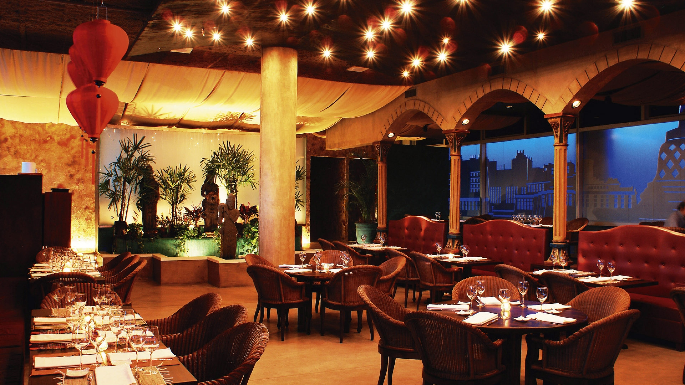
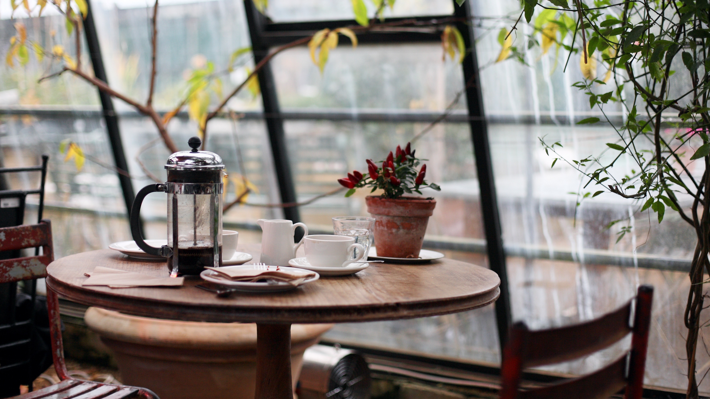

Best Restaurants in the World (2018)
With a wide variety of cultures throughout the world, there is a correspondingly extensive array of cuisines. There are always people searching for great places to eat. I'm definitely one of them!

Let's explore some of this variety.
I'll take you to look through 15 major countries. For those interested in starting a restaurant business or exploring new eateries, this is the place for you. Let's start right at the beginning.
Read More